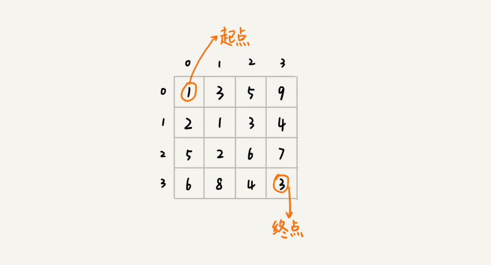
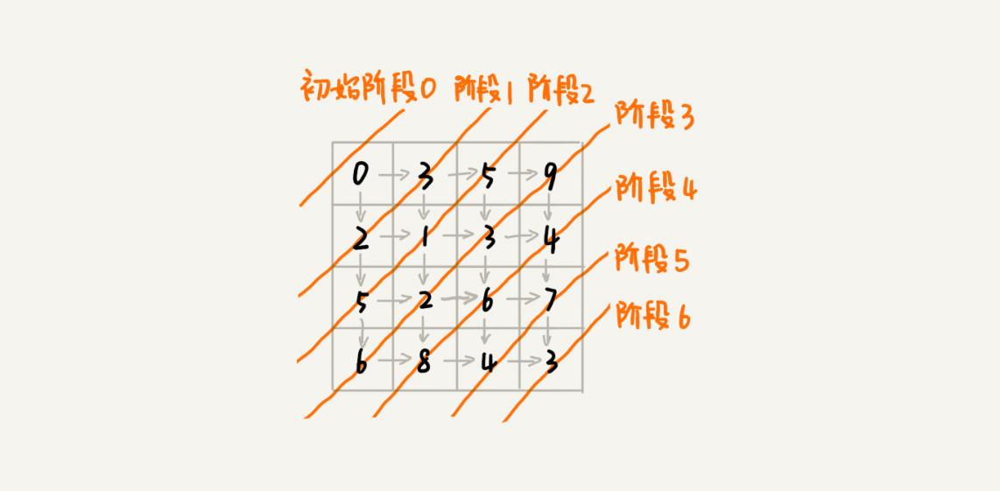
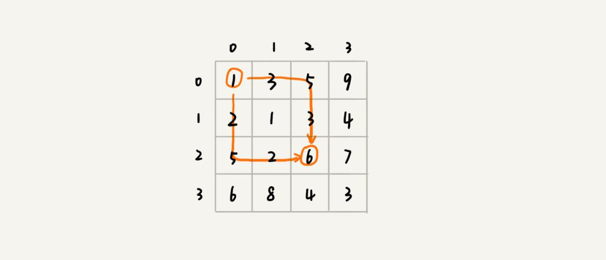
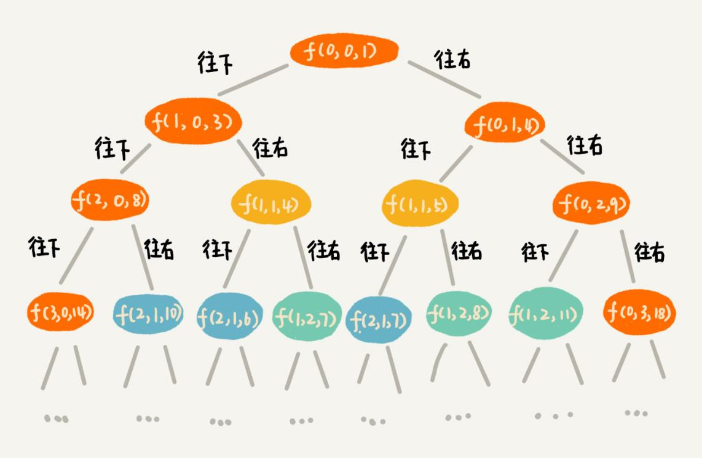
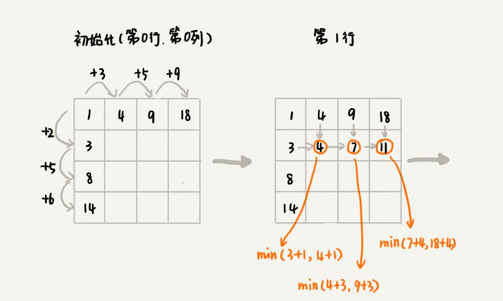
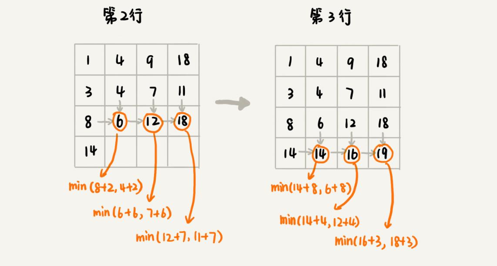

上一篇，通过两个非常经典的问题，向你展示了用动态规划解决问题的过程。现在你对动态规划应该有了一个初步的认识。
“一个模型三个特征”理论
什么样的问题适合用动态规划来解决呢？换句话说，动态规划能解决的问题有什么规律可循呢？实际上，动态规划作为一个非常成熟的算法思想，很多人对此已经做了非常全面的总结。这里把这部分理论总结为“一个模型三个特征”。
首先来看，什么是“一个模型”？它指的是动态规划适合解决的问题的模型。把这个模型定义为“多阶段决策最优解模型”。下面具体来讲讲。
一般是用动态规划来解决最优问题。而解决问题的过程，需要经历多个决策阶段。每个决策阶段都对应着一组状态。然后寻找一组决策序列，经过这组决策序列，能够产生最终期望求解的最优值。
现在再来看，什么是“三个特征”？它们分别是最优子结构、无后效性和重复子问题。这三个概念比较抽象，下面来逐一详细解释一下。
1. 最优子结构
最优子结构指的是，问题的最优解包含子问题的最优解。反过来说就是，可以通过子问题的最优解，推导出问题的最优解。如果把最优子结构，对应到前面定义的动态规划问题模型上，那也可以理解为，后面阶段的状态可以通过前面阶段的状态推导出来。
2. 无后效性
无后效性有两层含义，第一层含义是，在推导后面阶段的状态的时候，只关心前面阶段的状态值，不关心这个状态是怎么一步一步推导出来的。第二层含义是，某阶段状态一旦确定，就不受之后阶段的决策影响。无后效性是一个非常“宽松”的要求。只要满足前面提到的动态规划问题模型，其实基本上都会满足无后效性。
3. 重复子问题
这个概念比较好理解。前面已经多次提过。如果用一句话概括一下，那就是，不同的决策序列，到达某个相同的阶段时，可能会产生重复的状态。
“一个模型三个特征”实例剖析
“一个模型三个特征”这部分是理论知识，比较抽象，看了之后可能还是有点懵，有种似懂非懂的感觉，没关系，这个很正常。接下来，结合一个具体的动态规划问题，来详细解释。
假设有一个 n 乘以 n 的矩阵 w[n][n]。矩阵存储的都是正整数。棋子起始位置在左上角，终止位置在右下角。将棋子从左上角移动到右下角。每次只能向右或者向下移动一位。从左上角到右下角，会有很多不同的路径可以走。把每条路径经过的数字加起来看作路径的长度。那从左上角移动到右下角的最短路径长度是多少呢？

先看看，这个问题是否符合“一个模型”？
从 (0, 0) 走到 (n-1, n-1)，总共要走 2*(n-1) 步，也就对应着 2*(n-1) 个阶段。每个阶段都有向右走或者向下走两种决策，并且每个阶段都会对应一个状态集合。
把状态定义为 min_dist(i, j)，其中 i 表示行，j 表示列。min_dist 表达式的值表示从 (0, 0) 到达 (i, j) 的最短路径长度。所以，这个问题是一个多阶段决策最优解问题，符合动态规划的模型。

再来看，这个问题是否符合“三个特征”？
可以用回溯算法来解决这个问题。如果你自己写一下代码，画一下递归树，就会发现，递归树中有重复的节点。重复的节点表示，从左上角到节点对应的位置，有多种路线，这也能说明这个问题中存在重复子问题。

如果走到
(i, j) 这个位置，只能通过 (i-1, j)，(i, j-1) 这两个位置移动过来，也就是说，想要计算 (i, j) 位置对应的状态，只需要关心 (i-1, j)，(i, j-1) 两个位置对应的状态，并不关心棋子是通过什么样的路线到达这两个位置的。而且，仅仅允许往下和往右移动，不允许后退，所以，前面阶段的状态确定之后，不会被后面阶段的决策所改变，所以，这个问题符合“无后效性”这一特征。
刚刚定义状态的时候，把从起始位置 (0, 0) 到 (i, j) 的最小路径，记作 min_dist(i, j)。因为只能往右或往下移动，所以，只有可能从 (i, j-1) 或者 (i-1, j) 两个位置到达 (i, j)。也就是说，到达 (i, j) 的最短路径要么经过 (i, j-1)，要么经过 (i-1, j)，而且到达 (i, j) 的最短路径肯定包含到达这两个位置的最短路径之一。换句话说就是，min_dist(i, j) 可以通过 min_dist(i, j-1) 和 min_dist(i-1, j) 两个状态推导出来。这就说明，这个问题符合“最优子结构”。
1 | min_dist(i, j) = w[i][j] + min(min_dist(i, j-1), min_dist(i-1, j)) |
两种动态规划解题思路总结
现在再总结一下，动态规划解题的一般思路，让你面对动态规划问题的时候，能够有章可循，不至于束手无策。
个人觉得，解决动态规划问题，一般有两种思路。把它们分别叫作，状态转移表法和状态转移方程法。
1. 状态转移表法
一般能用动态规划解决的问题，都可以使用回溯算法的暴力搜索解决。所以，当拿到问题的时候，可以先用简单的回溯算法解决，然后定义状态，每个状态表示一个节点，然后对应画出递归树。从递归树中，很容易可以看出来，是否存在重复子问题，以及重复子问题是如何产生的。以此来寻找规律，看是否能用动态规划解决。
找到重复子问题之后，接下来，有两种处理思路，第一种是直接用回溯加“备忘录”的方法，来避免重复子问题。从执行效率上来讲，这跟动态规划的解决思路没有差别。第二种是使用动态规划的解决方法，状态转移表法。第一种思路，你可以看看上一篇的两个例子。重点来看状态转移表法是如何工作的。
先画出一个状态表。状态表一般都是二维的，所以你可以把它想象成二维数组。其中，每个状态包含三个变量，行、列、数组值。根据决策的先后过程，从前往后，根据递推关系，分阶段填充状态表中的每个状态。最后，将这个递推填表的过程，翻译成代码，就是动态规划代码了。
尽管大部分状态表都是二维的，但是如果问题的状态比较复杂，需要很多变量来表示，那对应的状态表可能就是高维的，比如三维、四维。那这个时候，就不适合用状态转移表法来解决了。一方面是因为高维状态转移表不好画图表示，另一方面是因为人脑确实很不擅长思考高维的东西。
现在来看一下，如何套用这个状态转移表法，来解决之前那个矩阵最短路径的问题？
从起点到终点，有很多种不同的走法。可以穷举所有走法，然后对比找出一个最短走法。不过如何才能无重复又不遗漏地穷举出所有走法呢？可以用回溯算法这个比较有规律的穷举算法。
回溯算法的代码实现如下所示。代码很短，而且前面也分析过很多回溯算法的例题，这里就不多做解释了，你自己来看看。
1 | private int minDist = Integer.MAX_VALUE; // 全局变量或者成员变量 |
有了回溯代码之后，接下来，要画出递归树，以此来寻找重复子问题。在递归树中，一个状态（也就是一个节点）包含三个变量 (i, j, dist)，其中 i，j 分别表示行和列，dist 表示从起点到达 (i, j) 的路径长度。从图中可以看出，尽管 (i, j, dist) 不存在重复的，但是 (i, j) 重复的有很多。对于 (i, j) 重复的节点，只需要选择 dist 最小的节点，继续递归求解，其他节点就可以舍弃了。

既然存在重复子问题，就可以尝试看下，是否可以用动态规划来解决呢？
画出一个二维状态表，表中的行、列表示棋子所在的位置，表中的数值表示从起点到这个位置的最短路径。按照决策过程，通过不断状态递推演进，将状态表填好。为了方便代码实现，按行来进行依次填充。


弄懂了填表的过程，代码实现就简单多了。将上面的过程，翻译成代码，就是下面这个样子。结合着代码、图和文字描述，应该更容易理解讲的内容。
1 | public int minDistDP(int[][] matrix, int n) { |
2. 状态转移方程法
状态转移方程法有点类似递归的解题思路。需要分析某个问题如何通过子问题来递归求解，也就是所谓的最优子结构。根据最优子结构，写出递归公式，也就是所谓的状态转移方程。有了状态转移方程，代码实现就非常简单了。一般情况下，有两种代码实现方法，一种是递归加“备忘录”，另一种是迭代递推。
还是拿刚才的例子来举例。最优子结构前面已经分析过了，你可以回过头去再看下。为了方便你查看，把状态转移方程放到这里。
1 | min_dist(i, j) = w[i][j] + min(min_dist(i, j-1), min_dist(i-1, j)) |
这里强调一下，状态转移方程是解决动态规划的关键。如果能写出状态转移方程，那动态规划问题基本上就解决一大半了，而翻译成代码非常简单。但是很多动态规划问题的状态本身就不好定义，状态转移方程也就更不好想到。
下面用递归加“备忘录”的方式，将状态转移方程翻译成来代码，你可以看看。对于另一种实现方式，跟状态转移表法的代码实现是一样的，只是思路不同。
1 | private int[][] matrix = {{1,3,5,9}, {2,1,3,4}, {5,2,6,7}, {6,8,4,3}}; |
两种动态规划解题思路到这里就讲完了。强调一点，不是每个问题都同时适合这两种解题思路。有的问题可能用第一种思路更清晰，而有的问题可能用第二种思路更清晰，所以，你要结合具体的题目来看，到底选择用哪种解题思路。
四种算法思想比较分析
到本篇为止，已经学习了四种算法思想，贪心、分治、回溯和动态规划。本篇的内容主要讲些理论知识，正好也分析一下这四种算法，看看它们之间有什么区别和联系。
如果将这四种算法思想分一下类，那贪心、回溯、动态规划可以归为一类，而分治单独可以作为一类，因为它跟其他三个都不大一样。为什么这么说呢？前三个算法解决问题的模型，都可以抽象成上面的多阶段决策最优解模型，而分治算法解决的问题尽管大部分也是最优解问题，但是，大部分都不能抽象成多阶段决策模型。
回溯算法是个“万金油”。基本上能用到动态规划、贪心解决的问题，都可以用回溯算法解决。回溯算法相当于穷举搜索。穷举所有的情况，然后对比得到最优解。不过，回溯算法的时间复杂度非常高，是指数级别的，只能用来解决小规模数据的问题。对于大规模数据的问题，用回溯算法解决的执行效率就很低了。
尽管动态规划比回溯算法高效，但是，并不是所有问题，都可以用动态规划来解决。能用动态规划解决的问题，需要满足三个特征，最优子结构、无后效性和重复子问题。在重复子问题这一点上，动态规划和分治算法的区分非常明显。分治算法要求分割成的子问题，不能有重复子问题，而动态规划正好相反，动态规划之所以高效，就是因为回溯算法实现中存在大量的重复子问题。
贪心算法实际上是动态规划算法的一种特殊情况。它解决问题起来更加高效，代码实现也更加简洁。不过，它可以解决的问题也更加有限。它能解决的问题需要满足三个条件，最优子结构、无后效性和贪心选择性（这里不怎么强调重复子问题）。
其中，最优子结构、无后效性跟动态规划中的无异。“贪心选择性”的意思是，通过局部最优的选择，能产生全局的最优选择。每一个阶段，都选择当前看起来最优的决策，所有阶段的决策完成之后，最终由这些局部最优解构成全局最优解。
总结
本篇首先讲了什么样的问题适合用动态规划解决。这些问题可以总结概括为“一个模型三个特征”。其中，“一个模型”指的是，问题可以抽象成分阶段决策最优解模型。“三个特征”指的是最优子节、无后效性和重复子问题。
然后，讲了两种动态规划的解题思路。它们分别是状态转移表法和状态转移方程法。其中，状态转移表法解题思路大致可以概括为，回溯算法实现 - 定义状态 - 画递归树 - 找重复子问题 - 画状态转移表 - 根据递推关系填表 - 将填表过程翻译成代码。状态转移方程法的大致思路可以概括为，找最优子结构 - 写状态转移方程 - 将状态转移方程翻译成代码。
最后，对比了之前讲过的四种算法思想。贪心、回溯、动态规划可以解决的问题模型类似，都可以抽象成多阶段决策最优解模型。尽管分治算法也能解决最优问题，但是大部分问题的背景都不适合抽象成多阶段决策模型。
思考
- 假设有几种不同币值的硬币
v1，v2，……，vn（单位是元）。如果要支付w元，求最少需要多少个硬币。比如，有3种不同的硬币，1元、3元、5元，要支付9元，最少需要3个硬币（3个3元的硬币）。欢迎留言和我分享。


评论加载中